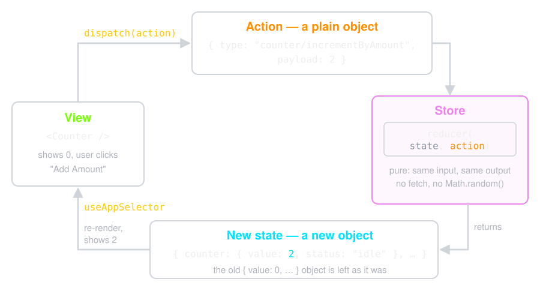

The code in this presentation comes from an example Redux app. To build the same project on your own machine, start from the official Redux + Vite template:
npx degit reduxjs/redux-templates/packages/vite-template-redux redux-essentials-example

Data goes one way: the view never changes state, it only dispatches.
Scroll the slides behind this box, or open the PDF.
Some of the content in this presentation comes from: